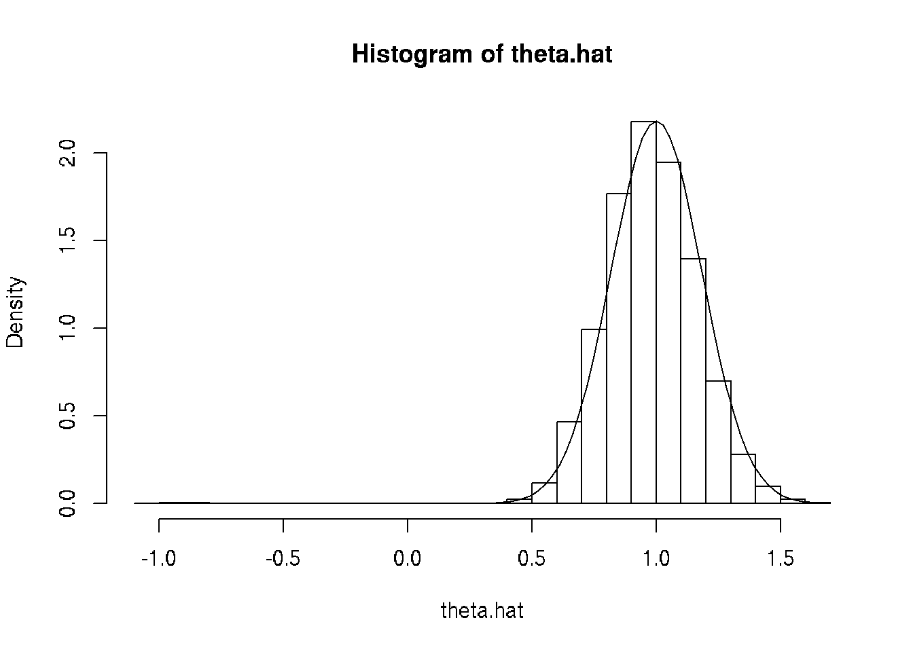
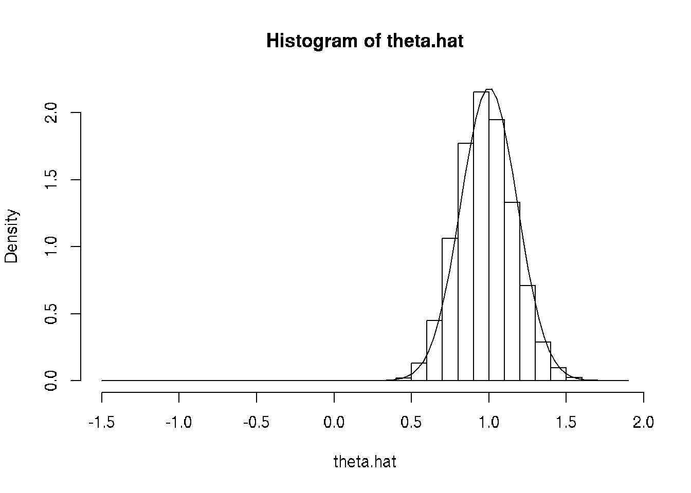

3 Parallel Computing in R
3.1 R Markdown Source
https://raw.githubusercontent.com/cjgeyer/Orientation2018/master/02-parallel.Rmd
3.2 Introduction
The example that we will use throughout this document is simulating the sampling distribution of the MLE for \(\text{Normal}(\theta, \theta^2)\) data.
A lot of this may make make no sense. This is what you are going to graduate school in statistics to learn. But we want a non-toy example.
3.3 Set-Up
# sample size
n <- 10
# simulation sample size
nsim <- 1e4
# true unknown parameter value
# of course in the simulation it is known, but we pretend we don't
# know it and estimate it
theta <- 1
doit <- function(estimator, seed = 42) {
set.seed(seed)
result <- double(nsim)
for (i in 1:nsim) {
x <- rnorm(n, theta, abs(theta))
result[i] <- estimator(x)
}
return(result)
}
mlogl <- function(theta, x) sum(- dnorm(x, theta, abs(theta), log = TRUE))
mle <- function(x) {
theta.start <- sign(mean(x)) * sd(x)
if (all(x == 0) || theta.start == 0)
return(0)
nout <- nlm(mlogl, theta.start, iterlim = 1000, x = x)
if (nout$code > 3)
return(NaN)
return(nout$estimate)
}R function
doitsimulatesnsimdatasets, applies an estimator supplied as an argument to the function to each, and returns the vector of results.R function
mloglis minus the log likelihood of the model in question. We could easily change the code to do another model by changing only this function. (When the code mimics the math, the design is usually good.)R function
mlecalculates the estimator by calling R functionnlmto minimize it. The starting value, eithersign(mean(x)) * sd(x)is a reasonable estimator becausemean(x)is a consistent estimator of \(\theta\) andsd(x)is a consistent estimator of \(\lvert \theta \rvert\).
3.4 Doing the Simulation without Parallelization
3.4.1 Try It
theta.hat <- doit(mle)3.4.2 Check It
hist(theta.hat, probability = TRUE, breaks = 30)
curve(dnorm(x, mean = theta, sd = theta / sqrt(3 * n)), add = TRUE)
The curve is the PDF of the asymptotic normal distribution of the MLE, which uses the formula \[ I_n(\theta) = \frac{3 n}{\theta^2} \] which you will learn how to calculate when you take a theory course (if you don’t already know).
Looks pretty good. The large negative estimates are probably not a mistake. The parameter is allowed to be negative, so sometimes the estimates come out negative even though the truth is positive. And not just a little negative because \(\lvert \theta \rvert\) is also the standard deviation, so it cannot be small and the model fit the data.
sum(is.na(theta.hat))## [1] 0mean(is.na(theta.hat))## [1] 0sum(theta.hat < 0, na.rm = TRUE)## [1] 9mean(theta.hat < 0, na.rm = TRUE)## [1] 9e-043.4.3 Time It
Now for something new. We will time it.
time1 <- system.time(theta.hat.mle <- doit(mle))
time1## user system elapsed
## 0.985 0.000 0.9853.4.4 Time It More Accurately
That’s too short a time for accurate timing. Also we should probably average over several IID iterations to get a good average. Try again.
nsim <- 1e5
nrep <- 7
time1 <- NULL
for (irep in 1:nrep)
time1 <- rbind(time1, system.time(theta.hat.mle <- doit(mle)))
time1## user.self sys.self elapsed user.child sys.child
## [1,] 10.112 0.000 10.123 0 0
## [2,] 10.175 0.001 10.158 0 0
## [3,] 9.746 0.000 9.726 0 0
## [4,] 9.963 0.000 9.945 0 0
## [5,] 9.665 0.000 9.651 0 0
## [6,] 10.000 0.000 9.987 0 0
## [7,] 9.517 0.000 9.505 0 0apply(time1, 2, mean)## user.self sys.self elapsed user.child sys.child
## 9.8825714286 0.0001428571 9.8707142857 0.0000000000 0.0000000000apply(time1, 2, sd) / sqrt(nrep)## user.self sys.self elapsed user.child sys.child
## 0.0923298582 0.0001428571 0.0936286266 0.0000000000 0.00000000003.5 Parallel Computing With Unix Fork and Exec
3.5.1 Introduction
This method is by far the simplest but
it only works on one computer (using however many simultaneous processes the computer can do), and
it does not work on Windows.
3.5.2 Toy Problem
First a toy problem that does nothing except show that we are actually using different processes.
library(parallel)
ncores <- detectCores()
mclapply(1:ncores, function(x) Sys.getpid(), mc.cores = ncores)## [[1]]
## [1] 17210
##
## [[2]]
## [1] 17211
##
## [[3]]
## [1] 17212
##
## [[4]]
## [1] 17213
##
## [[5]]
## [1] 17214
##
## [[6]]
## [1] 17215
##
## [[7]]
## [1] 17216
##
## [[8]]
## [1] 172173.5.3 Parallel Streams of Random Numbers
To get random numbers in parallel, we need to use a special random number generator (RNG) designed for parallelization.
RNGkind("L'Ecuyer-CMRG")
set.seed(42)
mclapply(1:ncores, function(x) rnorm(5), mc.cores = ncores)## [[1]]
## [1] 1.11932846 -0.07617141 -0.35021912 -0.33491161 -1.73311280
##
## [[2]]
## [1] -0.2084809 -1.0341493 -0.2629060 0.3880115 0.8331067
##
## [[3]]
## [1] 0.001100034 1.763058291 -0.166377859 -0.311947389 0.694879494
##
## [[4]]
## [1] 0.2262605 -0.4827515 1.7637105 -0.1887217 -0.7998982
##
## [[5]]
## [1] 0.8584220 -0.3851236 1.0817530 0.2851169 0.1799325
##
## [[6]]
## [1] -1.1378621 -1.5197576 -0.9198612 1.0303683 -0.9458347
##
## [[7]]
## [1] -0.04649149 3.38053730 -0.35705061 0.17722940 -0.39716405
##
## [[8]]
## [1] 1.3502819 -1.0055894 -0.4591798 -0.0628527 -0.2706805set.seed(42)
mclapply(1:ncores, function(x) rnorm(5), mc.cores = ncores)## [[1]]
## [1] 1.11932846 -0.07617141 -0.35021912 -0.33491161 -1.73311280
##
## [[2]]
## [1] -0.2084809 -1.0341493 -0.2629060 0.3880115 0.8331067
##
## [[3]]
## [1] 0.001100034 1.763058291 -0.166377859 -0.311947389 0.694879494
##
## [[4]]
## [1] 0.2262605 -0.4827515 1.7637105 -0.1887217 -0.7998982
##
## [[5]]
## [1] 0.8584220 -0.3851236 1.0817530 0.2851169 0.1799325
##
## [[6]]
## [1] -1.1378621 -1.5197576 -0.9198612 1.0303683 -0.9458347
##
## [[7]]
## [1] -0.04649149 3.38053730 -0.35705061 0.17722940 -0.39716405
##
## [[8]]
## [1] 1.3502819 -1.0055894 -0.4591798 -0.0628527 -0.2706805Just right! We have different random numbers in all our jobs. And it is reproducible.
But this may not work like you may think it does. If we do it again we get exactly the same results. Running mclapply does not change .Random.seed in the parent process (the R process you are typing into). It only changes it in the child processes (that do the work). But there is no communication from child to parent except the list of results returned by mclapply.
This is a fundamental problem with mclapply and the fork-exec method of parallelization. And it has no real solution. You just have to be aware of it.
If you want to do exactly the same random thing with mclapply and get different random results, then you must change .Random.seed in the parent process, either with set.seed or by otherwise using random numbers in the parent process.
3.5.4 The Example
We need to rewrite our doit function
to only do
1 / ncoresof the work in each child process,to not set the random number generator seed, and
to take an argument in some list we provide.
doit <- function(nsim, estimator) {
result <- double(nsim)
for (i in 1:nsim) {
x <- rnorm(n, theta, abs(theta))
result[i] <- estimator(x)
}
return(result)
}3.5.5 Try It
mout <- mclapply(rep(nsim / ncores, ncores), doit,
estimator = mle, mc.cores = ncores)
lapply(mout, head)## [[1]]
## [1] 0.9051972 0.9589889 0.9799828 1.1347548 0.9090886 0.9821320
##
## [[2]]
## [1] 0.8317815 1.3432331 0.7821308 1.2010078 0.9792244 1.1148521
##
## [[3]]
## [1] 0.8627829 0.9790400 1.1787975 0.7852431 1.2942963 1.0768396
##
## [[4]]
## [1] 1.0422013 0.9166641 0.8326720 1.1864809 0.9609456 1.3137716
##
## [[5]]
## [1] 0.8057316 0.9488173 1.0792078 0.9774531 0.8106612 0.8403027
##
## [[6]]
## [1] 1.0156983 1.0077599 0.9867766 1.1643493 0.9478923 1.1770221
##
## [[7]]
## [1] 1.2287013 1.0046353 0.9560784 1.0354414 0.9045423 0.9455714
##
## [[8]]
## [1] 0.7768910 1.0376265 0.8830854 0.8911714 1.0288567 1.16093603.5.6 Check It
Seems to have worked.
length(mout)## [1] 8sapply(mout, length)## [1] 12500 12500 12500 12500 12500 12500 12500 12500lapply(mout, head)## [[1]]
## [1] 0.9051972 0.9589889 0.9799828 1.1347548 0.9090886 0.9821320
##
## [[2]]
## [1] 0.8317815 1.3432331 0.7821308 1.2010078 0.9792244 1.1148521
##
## [[3]]
## [1] 0.8627829 0.9790400 1.1787975 0.7852431 1.2942963 1.0768396
##
## [[4]]
## [1] 1.0422013 0.9166641 0.8326720 1.1864809 0.9609456 1.3137716
##
## [[5]]
## [1] 0.8057316 0.9488173 1.0792078 0.9774531 0.8106612 0.8403027
##
## [[6]]
## [1] 1.0156983 1.0077599 0.9867766 1.1643493 0.9478923 1.1770221
##
## [[7]]
## [1] 1.2287013 1.0046353 0.9560784 1.0354414 0.9045423 0.9455714
##
## [[8]]
## [1] 0.7768910 1.0376265 0.8830854 0.8911714 1.0288567 1.1609360Plot it.
theta.hat <- unlist(mout)
hist(theta.hat, probability = TRUE, breaks = 30)
curve(dnorm(x, mean = theta, sd = theta / sqrt(3 * n)), add = TRUE)
3.5.7 Time It
time4 <- NULL
for (irep in 1:nrep)
time4 <- rbind(time4, system.time(theta.hat.mle <-
unlist(mclapply(rep(nsim / ncores, ncores), doit,
estimator = mle, mc.cores = ncores))))
time4## user.self sys.self elapsed user.child sys.child
## [1,] 0.007 0.012 2.191 14.063 0.217
## [2,] 0.001 0.016 2.733 18.288 0.164
## [3,] 0.003 0.016 3.156 20.357 0.240
## [4,] 0.003 0.016 3.093 20.051 0.200
## [5,] 0.001 0.016 3.091 20.264 0.260
## [6,] 0.000 0.019 3.132 20.185 0.247
## [7,] 0.002 0.016 3.079 20.126 0.236apply(time4, 2, mean)## user.self sys.self elapsed user.child sys.child
## 0.002428571 0.015857143 2.925000000 19.047714286 0.223428571apply(time4, 2, sd) / sqrt(nrep)## user.self sys.self elapsed user.child sys.child
## 0.0008689661 0.0007693093 0.1337486983 0.8739731857 0.0123901980We got the desired speedup. The elapsed time averages
apply(time4, 2, mean)["elapsed"]## elapsed
## 2.925with parallelization and
apply(time1, 2, mean)["elapsed"]## elapsed
## 9.870714without parallelization. But we did not get an 8-fold speedup with 8 cores. There is a cost to starting and stopping the child processes. And some time needs to be taken from this number crunching to run the rest of the computer. However, we did get a 3.4-fold speedup. If we had more cores, we could do even better.
3.6 The Example With a Cluster
3.6.1 Introduction
This method is more complicated but
it works on clusters like the ones at LATIS (College of Liberal Arts Technologies and Innovation Services or at the Minnesota Supercomputing Institute.
according to the documentation, it does work on Windows.
3.6.2 Toy Problem
First a toy problem that does nothing except show that we are actually using different processes.
library(parallel)
ncores <- detectCores()
cl <- makePSOCKcluster(ncores)
parLapply(cl, 1:ncores, function(x) Sys.getpid())## [[1]]
## [1] 17238
##
## [[2]]
## [1] 17247
##
## [[3]]
## [1] 17256
##
## [[4]]
## [1] 17265
##
## [[5]]
## [1] 17274
##
## [[6]]
## [1] 17283
##
## [[7]]
## [1] 17292
##
## [[8]]
## [1] 17301stopCluster(cl)This is more complicated in that
first you you set up a cluster, here with
makePSOCKclusterbut not everywhere — there are a variety of different commands to make clusters and the command would be different at LATIS or MSI — andat the end you tear down the cluster with
stopCluster.
Of course, you do not need to tear down the cluster before you are done with it. You can execute multiple parLapply commands on the same cluster.
There are also a lot of other commands other than parLapply that can be used on the cluster. We will see some of them below.
3.6.3 Parallel Streams of Random Numbers
cl <- makePSOCKcluster(ncores)
clusterSetRNGStream(cl, 42)
parLapply(cl, 1:ncores, function(x) rnorm(5))## [[1]]
## [1] -0.93907708 -0.04167943 0.82941349 -0.43935820 -0.31403543
##
## [[2]]
## [1] 1.11932846 -0.07617141 -0.35021912 -0.33491161 -1.73311280
##
## [[3]]
## [1] -0.2084809 -1.0341493 -0.2629060 0.3880115 0.8331067
##
## [[4]]
## [1] 0.001100034 1.763058291 -0.166377859 -0.311947389 0.694879494
##
## [[5]]
## [1] 0.2262605 -0.4827515 1.7637105 -0.1887217 -0.7998982
##
## [[6]]
## [1] 0.8584220 -0.3851236 1.0817530 0.2851169 0.1799325
##
## [[7]]
## [1] -1.1378621 -1.5197576 -0.9198612 1.0303683 -0.9458347
##
## [[8]]
## [1] -0.04649149 3.38053730 -0.35705061 0.17722940 -0.39716405parLapply(cl, 1:ncores, function(x) rnorm(5))## [[1]]
## [1] -2.1290236 2.5069224 -1.1273128 0.1660827 0.5767232
##
## [[2]]
## [1] 0.03628534 0.29647473 1.07128138 0.72844380 0.12458507
##
## [[3]]
## [1] -0.1652167 -0.3262253 -0.2657667 0.1878883 1.4916193
##
## [[4]]
## [1] 0.3541931 -0.6820627 -1.0762411 -0.9595483 0.0982342
##
## [[5]]
## [1] 0.5441483 1.0852866 1.6011037 -0.5018903 -0.2709106
##
## [[6]]
## [1] -0.57445721 -0.86440961 -0.77401840 0.54423137 -0.01006838
##
## [[7]]
## [1] -1.3057289 0.5911102 0.8416164 1.7477622 -0.7824792
##
## [[8]]
## [1] 0.9071634 0.2518615 -0.4905999 0.4900700 0.7970189We see that clusters do not have the same problem with continuing random number streams that the fork-exec mechanism has.
Using fork-exec there is a parent process and child processes (all running on the same computer) and the child processes end when their work is done (when
mclapplyfinishes).Using clusters there is a master process and slave processes (possibly running on many different computers) and the slave processes end when the cluster is torn down (with
stopCluster).
So the slave processes continue and remember where they are in the random number stream.
3.6.4 The Example on a Cluster
3.6.4.1 Set Up
Another complication of using clusters is that the slave processes are completely independent of the master. Any information they have must be explicitly passed to them.
This is very unlike the fork-exec model in which all of the child processes are copies of the parent process inheriting all of its memory (and thus knowing about any and all R objects it created).
So in order for our example to work we must explicitly distribute stuff to the cluster.
clusterExport(cl, c("doit", "mle", "mlogl", "n", "nsim", "theta"))Now all of the slaves have those R objects, as copied from the master process right now. If we change them in the master (pedantically if we change the R objects those names refer to) the slaves won’t know about it. They only would make changes if code were executed on them to do so.
3.6.4.2 Try It
So now we are set up to try our example.
pout <- parLapply(cl, rep(nsim / ncores, ncores), doit, estimator = mle)3.6.4.3 Check It
Seems to have worked.
length(pout)## [1] 8sapply(pout, length)## [1] 12500 12500 12500 12500 12500 12500 12500 12500lapply(pout, head)## [[1]]
## [1] 1.0079313 0.7316543 0.4958322 0.7705943 0.7734226 0.6158992
##
## [[2]]
## [1] 0.9589889 0.9799828 1.1347548 0.9090886 0.9821320 1.0032531
##
## [[3]]
## [1] 1.3432331 0.7821308 1.2010078 0.9792244 1.1148521 0.9269000
##
## [[4]]
## [1] 0.9790400 1.1787975 0.7852431 1.2942963 1.0768396 0.7546295
##
## [[5]]
## [1] 0.9166641 0.8326720 1.1864809 0.9609456 1.3137716 0.9832663
##
## [[6]]
## [1] 0.9488173 1.0792078 0.9774531 0.8106612 0.8403027 1.1296857
##
## [[7]]
## [1] 1.0077599 0.9867766 1.1643493 0.9478923 1.1770221 1.2789464
##
## [[8]]
## [1] 1.0046353 0.9560784 1.0354414 0.9045423 0.9455714 1.0312553Plot it.
theta.hat <- unlist(mout)
hist(theta.hat, probability = TRUE, breaks = 30)
curve(dnorm(x, mean = theta, sd = theta / sqrt(3 * n)), add = TRUE)3.6.4.4 Time It
time5 <- NULL
for (irep in 1:nrep)
time5 <- rbind(time5, system.time(theta.hat.mle <-
unlist(parLapply(cl, rep(nsim / ncores, ncores),
doit, estimator = mle))))
time5## user.self sys.self elapsed user.child sys.child
## [1,] 0.007 0.000 3.366 0 0
## [2,] 0.003 0.004 3.319 0 0
## [3,] 0.005 0.000 3.346 0 0
## [4,] 0.000 0.006 3.350 0 0
## [5,] 0.006 0.000 3.308 0 0
## [6,] 0.003 0.004 3.376 0 0
## [7,] 0.002 0.004 3.261 0 0apply(time5, 2, mean)## user.self sys.self elapsed user.child sys.child
## 0.003714286 0.002571429 3.332285714 0.000000000 0.000000000apply(time5, 2, sd) / sqrt(nrep)## user.self sys.self elapsed user.child sys.child
## 0.0009184429 0.0009476071 0.0149582185 0.0000000000 0.0000000000We got the desired speedup. The elapsed time averages
apply(time5, 2, mean)["elapsed"]## elapsed
## 3.332286with parallelization and
apply(time1, 2, mean)["elapsed"]## elapsed
## 9.870714without parallelization. But we did not get an 8-fold speedup with 8 cores. There is a cost to starting and stopping the child processes. And some time needs to be taken from this number crunching to run the rest of the computer. However, we did get a 3-fold speedup. If we had more cores, we could do even better.
We also that this method isn’t as good as the other method. So why do we want it (other than that the other doesn’t work on Windows)? Because it scales. You can get clusters with thousands of cores, but you can’t get thousands of cores in one computer.
3.6.5 Tear Down
Don’t forget to tear down the cluster when you are done.
stopCluster(cl)3.7 LATIS
3.7.1 Fork-Exec in Interactive Session
This is just like the fork-exec part of this document except for a few minor changes for running on LATIS.
SSH into compute.cla.umn.edu. Then
qsub -I -l nodes=1:ppn=8
cd tmp/Orientation2018 # or wherever
wget -N https://raw.githubusercontent.com/cjgeyer/Orientation2018/master/02-fork-exec.R
module load R/3.4.1
R CMD BATCH --vanilla 02-fork-exec.R
cat 02-fork-exec.Rout
exit
exit3.7.2 Cluster in Interactive Session
Almost the same thing again
qsub -I -l nodes=1:ppn=8
cd tmp/Orientation2018 # or wherever
wget -N https://raw.githubusercontent.com/cjgeyer/Orientation2018/master/02-cluster.R
module load R/3.4.1
R CMD BATCH --vanilla 02-cluster.R
cat 02-cluster.Rout
exit
exit3.7.3 Fork-Exec as Batch Job
cd tmp/Orientation2018 # or wherever
wget -N https://raw.githubusercontent.com/cjgeyer/Orientation2018/master/02-fork-exec.R
wget -N https://raw.githubusercontent.com/cjgeyer/Orientation2018/master/02-fork-exec.pbs
qsub 02-fork-exec.pbsIf you want e-mail sent to you when the job starts and completes, then add the lines
### EMAIL NOTIFICATION OPTIONS ###
#PBS -m abe # Send email on a:abort, b:begin, e:end
#PBS -M yourusername@umn.edu # Your email addressto 02-fork-exec.pbs where, of course, yourusername is replaced by your actual username.
The linux command
qstatwill tell you if your job is running.
You can log out of compute.cla.umn.edu after your job starts in batch mode. It will keep running.
3.7.4 Cluster as Batch Job
Same as above mutatis mutandis
cd tmp/Orientation2018 # or wherever
wget -N https://raw.githubusercontent.com/cjgeyer/Orientation2018/master/02-cluster.R
wget -N https://raw.githubusercontent.com/cjgeyer/Orientation2018/master/02-cluster.pbs
qsub 02-cluster.pbswith the same comment about email.